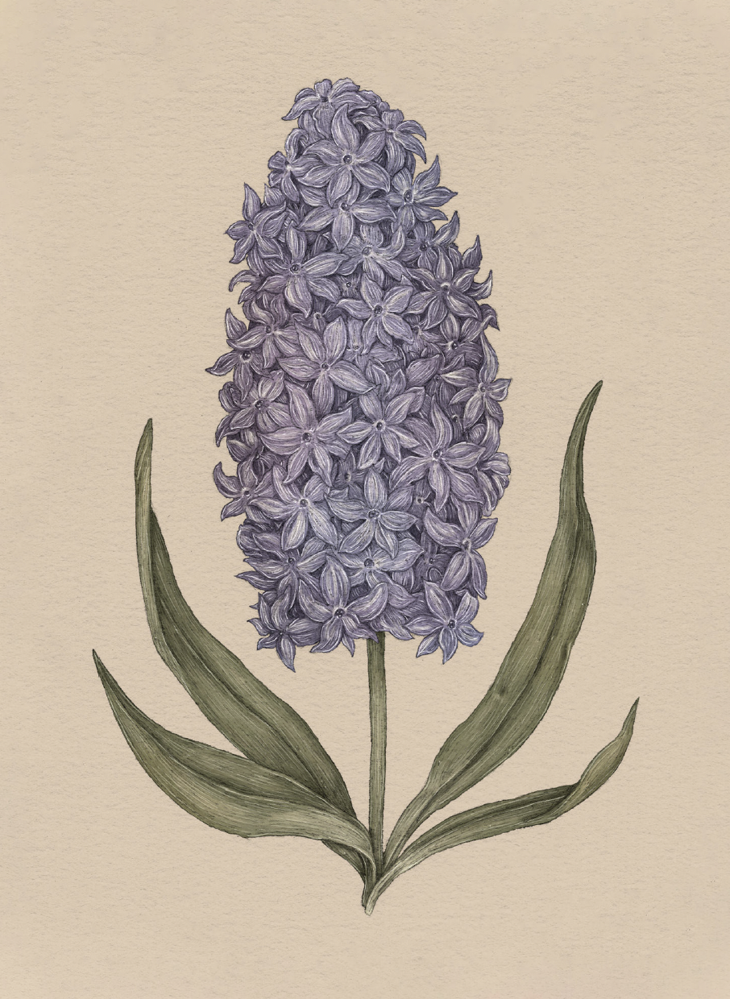

Plate HYACINTH
The Language of Flowers
Hyacinth Study

Hyacinth
Hyacinthus
Definition: A flower associated in floriography with apology and the plea for forgiveness.
Meaning
Please forgive me
Origin
The hyacinth takes its name and meaning from Greek mythology. Hyacinthus, a beautiful young man, was
beloved by Apollo. During a game of discus throwing, Apollo's discus was knocked from its course by
a jealous Zephyrus, striking Hyacinthus and killing him. Hyacinth flowers were said to have grown
from the blood that fell from his head wound as Apollo begged his forgiveness.
Pair With
- Olive to ask for peace and forgiveness
- Pansy to indicate your betrayal haunts you